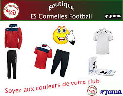

Nous allons vous faire découvrir notre club, nos équipes.
Notre club se situe a cormelles le royal en normandie, il a été inauguré en 1992 et ses couleurs dominantes sont le rouge et le noir!
Nos terrains
Pour que vous puissiez plus facilement vous rendre compte de l'entrée et de l'envers du décors de notre club nous vous proposons quelques images des terrains de notre stade municpal sur lesquels nos jeunes jouent:
photos des terrains
Voici une photo prise à l'entrée du stade (terrain d'honneur) :

Un équipement est donné au jouer suite à sa licence et pour plus de fidélité vous pouvez acheter des accessoirs sur la boutique du club qui est mise a jour régulièrement :

boutique du club
Nos activités pendant le confinement
Pendant le confinement nous avons demandé a chaque joueurs/joueuses et entraineurs d'envoyer des photos avec des messages pour donner des nouvelles de chacun et pour voir ce que chacun faisait de ses journés...Nous avons donc séléctionné pour vous quelques unes de ces photos que vous pouvez retrouver ci dessous :
photos confinement
Notre club est un club familial où les plus petits sont aussi les bienvenus, Nous avons pour les plus petits des équipes mixtes et pour les plus grands non mixtes.
Notre club compte 15 éducateurs àgés de 13 à 73 ans et plus de 250 licenciés, petits et grands.
Notre club a des équipes U6-U7, U8-U9, U10-U11, U12-U13, U14-U15, U16-U18 jusqu'aux véterants.
plusieurs personnes sont presentes aux matchs afin de prendre joueurs et joueuses en photo pour qu'ils en aient en souvenir